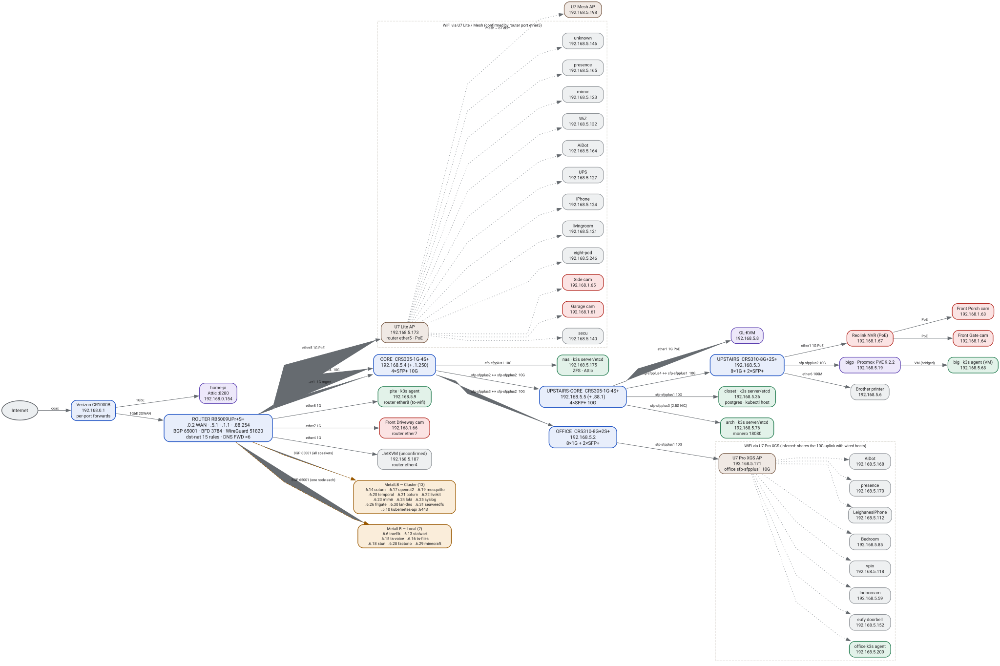

Home network inventory — every subnet and host
Three production networks and one recovery net: 192.168.0.0/24 is the Verizon LAN the ISP sees,
192.168.5.0/24 is the switched house LAN, 192.168.6.0/24 is the MetalLB VIP space that has no
interface anywhere, and 192.168.88.0/24 survives only as the factory-default recovery address.
192.168.1.0/24 carries the cameras. The MikroTik is the only box with a foot on both the WAN side and the LAN.
The network
wg-remote. Each card lists every host in that subnet; the 10G fabric is a single box because every host reaches the router through it.The edge in detail
Expanded diagram (port-level)
The map above is the summary. The same live data is also in a Graphviz graph for panning and zooming: every switch port, every server attachment, and each wireless client behind its AP. Solid edges are confirmed (LLDP neighbour tables or a MAC learned on that switch port); dotted edges are wireless associations inferred from the AP's uplink port, because the controller's per-client view needs credentials I do not read.
- network-diagram.svg — rendered, 2273 × 1514 pt
- network-diagram.dot — source; re-render with
dot -Tsvg network-diagram.dot -o network-diagram.svg


router → core → upstairs-core → upstairs, with the office switch on core and the servers on the ports the MAC tables put them on.192.168.0.0/24 — Verizon LAN (ISP side)
Five addresses are in use. Only per-port forwards cross into 192.168.0.2; the Verizon router is not a full
DMZ, so every new WAN port needs a forward here and a dst-nat on the MikroTik.
| IP | Host | MAC | Source | Notes |
|---|---|---|---|---|
| .0.1 | Verizon CR1000B | 74:90:BC:79:0A:A4 | static | ISP gateway; per-port forwards → .0.2 |
| .0.2 | MikroTik 2GWAN | — | static | primary WAN; WireGuard 51820 terminates here |
| .0.152 | MikroTik 2GWAN (2nd) | — | DHCP (D) | secondary address, unused for forwarding |
| .0.154 | home-pi | — | static | Attic cache :8280; on the Verizon LAN, outside the MikroTik |
| .0.165 | unidentified | 46:5C:E3:6B:66:C1 | ARP only | reached during the snapshot, no lease, silent on ping |
192.168.1.0/24 — main LAN / cameras
The Reolink cameras. The whole subnet is blocked from WAN egress; secu handles NVR duties on the other LAN.
| IP | Host | MAC | Source | Notes |
|---|---|---|---|---|
| .1.250 | core switch | D0:EA:11:70:B9:EF | static | second address on the core, on the camera net |
| .1.1 | router (bridge) | — | static | 192.168.1.1, second address on the same bridge |
| .1.61 | Garage cam | EC:71:DB:F4:DC:49 | DHCP lease | Reolink |
| .1.63 | Front cam | EC:71:DB:89:D8:8B | DHCP lease | Reolink |
| .1.64 | Front cam | EC:71:DB:65:58:A3 | DHCP lease | Reolink |
| .1.65 | Side cam | 94:B3:F7:18:52:CC | DHCP lease | Reolink |
| .1.66 | Front cam | EC:71:DB:3E:2F:21 | DHCP lease | Reolink |
| .1.67 | NVR | EC:71:DB:8B:92:93 | DHCP lease | Reolink NVR; the only 1.0/24 host answering ARP |
192.168.5.0/24 — switch LAN
42 hosts. Everything below .50 is static and never served by DHCP; the pool is .50–.254.
Five are the switch fabric, seventeen are fixed infrastructure (printer, k3s nodes, Proxmox, APs, BMC), and twenty are clients and IoT.
| IP | Host | MAC | Source | Notes |
|---|---|---|---|---|
| .5.1 | router · RB5009 | — | static | gateway · BGP 65001 · DNS · WireGuard |
| .5.2 | office switch · CRS310 | 04:F4:1C:E7:24:45 | static | 8×1G + 2×SFP+ |
| .5.3 | upstairs switch · CRS310 | 04:F4:1C:E6:7C:14 | static | 8×1G + 2×SFP+ |
| .5.4 | core switch · CRS305 | D0:EA:11:70:B9:EF | static | 4×SFP+ 10G |
| .5.5 | upstairs-core · CRS305 | D0:EA:11:6B:75:F5 | static | 4×SFP+ 10G; holds the defconf .88.1 |
| .5.6 | Brother printer | — | static | upstairs switch ether6 |
| .5.8 | GL-KVM | 94:83:C4:C4:9C:4D | static | tailnet glkvm |
| .5.9 | pite | DC:A6:32:25:51:6E | reservation | k3s agent (Pi), excluded from announcing; uplink is router ether8 (to-wifi), not the office switch |
| .5.10 | k3s API VIP | — | MetalLB | kubernetes-api :6443 — ICMP never answers |
| .5.19 | bigp · Proxmox | 2C:EA:7F:E7:13:98 | static | PVE 9.2.2; hosts big, unifi-os, steam, github |
| .5.30 | UniFi OS console | BC:24:11:23:B8:A5 | static | VM on bigp, :11443 |
| .5.36 | closet | 0C:C4:7A:BD:63:3D | reservation | k3s server + etcd, postgres, kubectl host |
| .5.68 | big | BC:24:11:19:22:F9 | reservation | k3s agent, VM on bigp |
| .5.76 | arch | 98:B7:85:23:48:90 | reservation | k3s server + etcd; monero 18080 |
| .5.122 | steam | BC:24:11:7B:CE:02 | DHCP lease | VM on bigp |
| .5.140 | secu | 00:13:EF:F2:A0:BF | DHCP lease | NVR duties |
| .5.175 | nas | E8:4D:D0:C1:54:20 | reservation | k3s server + etcd; also .125 on enp7s0 |
| .5.209 | office | C4:3D:1A:F3:0E:76 | reservation | k3s agent (wifi), never a BGP speaker |
| .5.254 | iDRAC · R740 | 2C:EA:7F:7B:12:75 | reservation | BMC, Redfish, 3-strike IP block |
| .5.171 | U7 Pro XGS | 90:41:B2:D6:74:DB | DHCP lease | office, 10GbE uplink |
| .5.173 | U7 Lite | 1C:0B:8B:50:FF:7E | DHCP lease | router ether5, PoE |
| .5.198 | U7 Mesh | 8C:ED:E1:EC:89:CA | DHCP lease | wireless mesh to the Lite |
| .5.53 | unidentified | 8C:85:80:DE:BE:A3 | ARP only | no lease, answers ping |
| .5.59 | Indoorcam | 04:17:B6:09:EE:95 | DHCP lease | |
| .5.85 | Bedroom-11607 | F0:B3:EC:7E:31:64 | DHCP lease | |
| .5.112 | LeighanesiPhone | 10:DA:63:C4:C8:12 | DHCP lease | |
| .5.118 | vpin | B8:27:EB:56:F0:27 | DHCP lease | |
| .5.121 | livingroom2707 | 8C:26:AA:BE:80:C4 | DHCP lease | |
| .5.123 | mirror | DC:A6:32:0C:FE:5D | DHCP lease | |
| .5.124 | iPhone | BE:B2:F3:CD:84:C3 | DHCP lease | |
| .5.127 | K3B-US-PGA0539A | C8:FF:77:57:E0:3D | DHCP lease | |
| .5.131 | unidentified | B0:FC:0D:DE:FB:50 | DHCP lease | |
| .5.132 | wiz_79f13c | D8:A0:11:79:F1:3C | DHCP lease | |
| .5.146 | unidentified | 54:49:DF:12:BF:49 | DHCP lease | |
| .5.152 | eufyDoorbell | 04:17:B6:05:DB:D8 | DHCP lease | |
| .5.164 | AiDot | D0:CF:13:8C:6D:74 | DHCP lease | |
| .5.165 | akamatis-presence-sensor-52f0c8 | 80:F1:B2:52:F0:C8 | DHCP lease | |
| .5.168 | AiDot | D0:CF:13:8D:4E:28 | DHCP lease | |
| .5.170 | akamatis-presence-sensor-6c7088 | 94:A9:90:6C:70:88 | DHCP lease | |
| .5.172 | unidentified | 00:07:A6:40:E7:4B | DHCP lease | |
| .5.187 | unidentified | 30:52:53:09:E1:72 | DHCP lease | |
| .5.246 | eight-pod | 70:B6:51:00:3B:67 | DHCP lease |
Wireless attachment
Derived from the router's bridge host table (MAC → egress port), not from the UniFi controller: it shows which segment a device's frames leave through, not signal, channel or which SSID. The office AP's clients share the 10G uplink with wired hosts, so they cannot be separated this way.
| Router port | Segment | Devices seen behind it |
|---|---|---|
| ether5 | U7 Lite + U7 Mesh (PoE; mesh links to the Lite) | 11 named clients — secu, eight-pod, livingroom2707, iPhone, UPS, AiDot, wiz, mirror, Garage cam, Side cam, presence sensor — plus 2 unidentified MACs |
| ether8 to-wifi | no LLDP/MNDP neighbour | pite, and nothing else |
| ether7 | — | Front camera (.1.66) |
| ether4 | — | one unidentified client (.5.187) |
| 10GsfpLAN | through the core and office switches | U7 Pro XGS and every wired host; its wireless clients are indistinguishable here |
pite is not on the office switch. The runbook says office-switch ether1 → pite, but that
port is down: the office switch only learns pite's MAC on its 10G uplink, and the router egresses pite's frames on
ether8 (to-wifi). It is either on router port 8 or behind a transparent wireless bridge.
Worth confirming physically — and the guide should be corrected either way.
Two cameras are wireless. Garage (.1.61) and Side (.1.65) leave through
the U7 Lite, while the Front cameras and the NVR are wired. The camera subnet is egress-blocked, so this is a
placement fact rather than a security one.
192.168.6.0/24 — MetalLB
| IPv4 | IPv6 | Service | Ports | Announce | Router picks | WAN | WireGuard |
|---|---|---|---|---|---|---|---|
| .6.6 | ::6 | traefik | 80 → web · 443 → websecure | Local closet+arch | closet | 80, 443 | routed |
| .6.13 | ::13 | stalwart | 25 · 587 · 993 | Local nas | nas | 25, 587, 993 | routed |
| .6.14 | ::14 | coturn (steam-lobby) | 3478 tcp+udp · 45000–45063/udp | Cluster all speakers | closet | 3478 · 45000–45063/udp | routed |
| .6.15 | ::15 | ts-voice | 9987/udp | Local closet | closet | 9987/udp | routed |
| .6.16 | ::16 | ts-files | 30033/tcp | Local closet | closet | 30033 | routed |
| .6.17 | ::17 | openrct2-game | 11753/tcp | Cluster all speakers | none — no ready pod | 11753 | routed |
| .6.18 | ::18 | headscale-stun | 3479/udp | Local arch | arch | 3479/udp | routed |
| .6.19 | ::19 | mosquitto | 1883/tcp | Cluster all speakers | closet | — | routed |
| .6.20 | — | temporal-frontend | 7233→rpc · 7243→http | Cluster all speakers | closet | — | in use |
| .6.21 | ::21 | coturn (matrix) | 3478 tcp+udp · 49152–49213/udp | Cluster all speakers | closet | — | routed |
| .6.22 | ::22 | livekit-server-rtc | 7881/tcp · 50000/udp | Cluster all speakers | closet | 7881 | routed |
| .6.23 | ::23 | mimir-lb | 8080/tcp | Cluster all speakers | closet | — | routed |
| .6.24 | ::24 | loki-push-lb | 3100 → 8080 | Cluster all speakers | closet | — | routed |
| .6.25 | ::25 | syslog-lb | 514/udp → 1514 | Cluster all speakers | closet | — | routed |
| .6.26 | ::26 | frigate | 5000 · 1984 · 8554/tcp · 8555/udp | Cluster all speakers | none — no ready pod | — | routed |
| .6.28 | ::28 | factorio-game | 34197/udp | Local arch | arch | 34197/udp | routed |
| .6.29 | ::29 | minecraft-game | 25565/tcp | Local closet | closet | 25565 | routed |
| .6.30 | ::30 | lan-dns | 53 tcp+udp → 1053 | Cluster all speakers | closet | — | routed |
| .6.31 | ::31 | seaweedfs-s3-lan | 8333/tcp | Cluster all speakers | closet | — | in use |
| .5.10 | — | kubernetes-api | 6443 | Cluster all speakers | closet | — | routed |
“Router picks” is the selected path, not the set of announcers — for a Cluster VIP every speaker carries it and the router installs one. .6.17 and .6.26 have no route right now (no ready pod); the pool is a blackhole at distance 250, so they drop rather than leak to the default route.
192.168.88.0/24 — recovery
Two addresses survive: .88.254 on the router and the factory-default 192.168.88.1 still held by upstairs-core. Any reset MikroTik comes up on this subnet, which makes it the path back to a bricked switch.
Overlays and address families
| Range | Purpose | Members |
|---|---|---|
| fd00:1::/64 | node ULA, advertised on the bridge | closet, arch, nas (static) + stateful DHCPv6 `ula-dhcp` |
| fd00:6::/64 | MetalLB IPv6 pool | 19 v6 twins — every VIP except .6.20 |
| 10.42.0.0/16 | flannel pod network | all pods, VXLAN |
| 10.43.0.0/16 | k3s service CIDR | ClusterIPs |
| 10.99.0.0/24 | WireGuard tunnel | router .1, DO cluster .2 |
| 100.64.0.0/10 | tailnet (headscale) | 22 devices, 16 online |
| 10.244.0.0/16 | DO pod network | reachable only as source 10.99.0.2 |
| 10.245.0.0/16 | DO service CIDR | not routed to home |
Tailnet
22 devices in headscale, 16 online. The subnet router is arch + closet, which is how 192.168.6.0/24 is
reachable from a phone on LTE. Six entries are stale by months — safe to prune if they are not yours.
| Device | Tailnet IP | OS | State |
|---|---|---|---|
| arch | 100.64.0.1 | linux | active · direct 192.168.5.76:41641 |
| closet | 100.64.0.2 | linux | active · direct 192.168.5.36:41641 |
| office | 100.64.0.3 | linux | online |
| serverkvm | 100.64.0.4 | linux | offline · 168 d |
| pite | 100.64.0.5 | linux | online (tagged) |
| glkvm | 100.64.0.6 | linux | online |
| mullvad-us-vpin-deccam | 100.64.0.7 | linux | exit node · idle |
| john-phone | 100.64.0.8 | iOS | online |
| github | 100.64.0.12 | linux | offline · 1 d |
| desktop-1eg884n | 100.64.0.13 | windows | offline · 96 d |
| nas | 100.64.0.14 | linux | active · direct 192.168.5.175:41641 |
| desktop-pjem2ib | 100.64.0.17 | windows | offline · 183 d |
| doks-us-nyc | 100.64.0.21 | linux | exit node · idle |
| big | 100.64.0.24 | linux | idle |
| secu | 100.64.0.25 | linux | online |
| mirror | 100.64.0.26 | linux | online |
| desktop-invfan1 | 100.64.0.27 | windows | offline · 5 d |
| ipad-1 | 100.64.0.28 | iOS | offline · 2 d |
| mullvad-jp-tokyo-honrat | 100.64.0.29 | linux | exit node · idle |
| mullvad-de-dusseldorf-sachor | 100.64.0.30 | linux | exit node · idle |
| mullvad-za-johannesburg-spirab | 100.64.0.31 | linux | exit node · idle |
| mullvad-ee-tallinn-rapbis | 100.64.0.32 | linux | exit node · idle |
What this shows
Seventy-five IPv4 hosts, and the boundary is one box. Only five addresses exist on the ISP side; everything else is behind the MikroTik. The Verizon router forwards specific ports only, so the MikroTik's dst-nat table is the single place that decides what the internet can reach.
Twenty of the 42 hosts on the switch LAN are client and IoT devices. Phones, TVs, a UPS, presence
sensors, AiDot and eufy devices, and five MACs with no hostname at all (.5.53, .5.131,
.5.146, .5.172, .5.187). They are DHCP, so they are not a misconfiguration —
but they are the part of the network with no owner recorded anywhere.
192.168.6.0/24 exists nowhere as an interface. No router address, no bridge; the router
holds a blackhole route for the whole /24 and /32s from BGP. That is why ping to any VIP
times out and why an unannounced VIP fails closed instead of ARPing into the void.
The tailnet has drifted. desktop-pjem2ib (183 d), serverkvm (168 d) and
desktop-1eg884n (96 d) are still listed. Tailnet membership is the operator plane, so pruned devices also
shrink what can reach 192.168.6.0/24 over the subnet route.
How to re-check
# VIPs, ports, announcement policy, node ports
kubectl get svc -A -o json
kubectl -n kube-system get pods -l app.kubernetes.io/name=traefik -o wide
# which node carries each prefix (selected path), and the WAN forwards
mikrotik-connect r '/ip route print terse where dst-address~"192.168.6." and active=yes'
mikrotik-connect r '/ip firewall nat print terse where chain=dstnat'
# listener set on a node
ssh 192.168.5.36 'sudo -n ss -ltnuH | awk "{print \$1, \$5}" | sort -u'
# WireGuard: both ends, then the live flows
mikrotik-connect r '/interface wireguard peers print detail'
kubectl --context 2143prod -n default get deploy wireguard-doks -o yaml
kubectl --context 2143prod -n default get cm home-tunnel-proxy -o yaml
mikrotik-connect r '/ip firewall connection print terse where src-address~"10.99" or dst-address~"10.99"'Related: network-edge · 2026-10-15-fungible-ingress · node-maintenance · lan-dns.